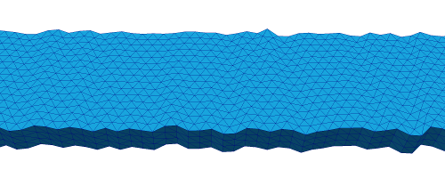
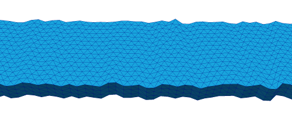
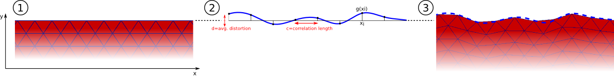

2.23. Mesh distortion for edge roughness simulation¶
The meshes used in micromagnetic simulations usually represent idealized geometries (for example, a nanowire might be modeled using a completely smooth cuboid mesh). Real-world materials, on the other hand, possess imperfections on various scales caused by fabrication processes (e.g., electron beam lithography or sputter deposition). This can potentially have a significant impact on the magnetization dynamics. The advantage of finite element-based simulations is that such effects can be simulated (at least qualitatively) by distorting the mesh in a suitable way. nmeshpp provides a means of distorting a given mesh in order to imitate roughness so that the resulting effects on simulations can be explored. Note that at the moment only edge roughness is supported. We first present an example in the following section and then go into the details of the command line interface and how the distortion process works.
The appropriate reference for this mesh distortion is Albert et al [2], where the method is described and used to study domain walll motion in the presence of edge roughness.
2.23.1. Example¶
Consider a nanowire with dimensions 800nm x 20nm x 5nm (for convenience we provide the corresponding mesh in the file nanowire_800x20x5.nmesh). [1]
We distort this mesh using the following command:
nmeshpp --distort 0.4 --correlation-length 2.0 --seed 23 nanowire_800x20x5.nmesh \
nanowire_800x20x5_distorted.nmesh
Intuitively, what this command does is to randomly displace the “front” and “rear” nodes of the mesh and to stretch/shrink the middle bits accordingly. The details of this process, as well as meaning of all the command line switches, are explained in the next section. The original and distorted mesh look like this (only part of each mesh is shown):
 

This figure shows a smooth nanowire (top), and then the same mesh after having been distorted using the nmesh command shown above. The figure is taken from [2].
| [1] | The mesh file for the nanowire was produced using the examesh tool, which is included in the nmag distribution in the directory utils/cubicmesh/ (note that it needs to be compiled before it can be used - just cd into this directory and type make). The exact command used to produce the mesh file was examesh nanowire_800x20x5.nmesh,800:450,20:15,5:3. |
2.23.2. Details and command line options¶
Preliminary remark: As mentioned above, nmeshpp can only produce edge roughness at the moment. There is a slight chance that the user interface might change in the future when more functionality (such as surface roughness) is added.
In this section we go into the details of the distortion process and explain the relevant command line options. The general usage is:
nmeshpp --front-rear-axis [X|Y|Z] --distort-along-axis [X|Y|Z] --distort D \
--correlation-length C --seed S mesh_orig.nmesh mesh_distorted.nmesh
Only --distort, --correlation-length and the name of the input mesh are required arguments.
The overall distortion process works as follows. First, the surface nodes of the mesh are divided into “front” and “rear”, depending on which side of the mesh they lie on. By default, this distinction is based on their y-coordinate (as in the example in the previous section), but this can be changed using the option --front-rear-axis. Next, a univariate “distortion function” f(x) is constructed based on the given command line parameters (the details of this process will be explained in a moment). This function specifies the amount by which each front node is displaced in y-direction (as a function of the x-coordinate of the node). Analogously, the rear nodes are displaced using a second, independently constructed distortion function g(x) (so that both sides of the mesh are distorted differently). The intermediate parts of the mesh are stretched to fit nicely between the new distorted sides.
The whole procedure is illustrated in the following picture (see [2]). It shows a top view (i.e., along the z-axis) of the rear part of the nanowire from the previous section. The left hand side shows the original mesh, the right hand side shows the mesh after distortion with the function g, which is depicted in the middle. Note that the contour of the distorted mesh follows the outline of g.
The distortion functions f and g are constructed as follows. First we pick equidistant nodes x_i along the x-axis (note that these are just auxiliary entities and completely independent from the nodes of the mesh). Then random values f(x_i) and g(x_i) are assigned to each such node, chosen from a normal distribution with mean 0 and a certain standard deviation that determines the “amplitude” of the roughness. Finally, these random values are interpolated smoothly to obtain the continuous distortion functions f(x) and g(x). In order to make the randomization reproducible, it is possible to specify a seed for the internal random number generator (by passing any integer value as an argument to --seed). Otherwise the output mesh is different each time because the random number generator is seeded using the system time or something similar.
The reason why we need these distortion functions at all and can’t just randomly displace each mesh node individually is because then the result would strongly depend on the mesh spacing and the overall quality of the mesh. However, since we usually want roughness on a scale independent from the mesh spacing, we need some kind of correlation between the displacements of adjacent mesh nodes, hence the need for the distortion functions.
The parameters in the construction of f and g are:
- the distance between the nodes x_i, which can be controlled with the flag --correlation-length,
- the standard deviation of the underlying normal distribution, which must be specified using the command line switch -d, or --distort.
Note that depending on which edges of the mesh the roughness should be applied to (and on the way the mesh is oriented in the coordinate system), it may be necessary to apply the distortion in a direction different from the y-direction and also to consider f and g as functions of a different input axis (distinct from the x-axis). The first can again be controlled using the option --front-rear-axis, which was already mentioned above. The second can be adjusted using --distort-along-axis. For instance, if the roughness should displace the nodes in z-direction and if the amount of displacement should be a function of their y-coordinates, the command line arguments would be --front-rear-axis Z --distort-along-axis Y.
| [2] | (1, 2, 3) Maximilian Albert, Matteo Franchin, Thomas Fischbacher, Guido Meier, and Hans Fangohr, Domain wall motion in perpendicular anisotropy nanowires with edge roughness, J. Phys.: Condens. Matter 24 , 024219 (14 pages) (2012) (postprint pdf) |